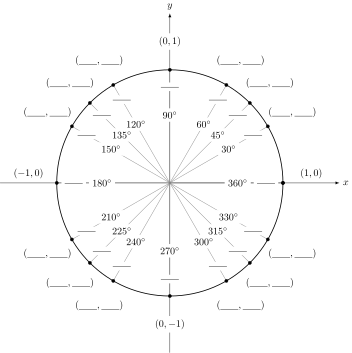

How can we model systems that vary in a smooth, wavelike cycle, rising and falling again and again?
How can we model the shape of waves in water, sound waves, radio waves, the motion of the tides in and out over the course of a day, the shaking of an earthquake, or the varying time of sunrise over the course of a year?
You probably first learned about sines, cosines, and tangents when you were studying triangles. However, these functions are amazingly useful in an enormous variety of contexts. These functions are so handy that scientists and mathematicians always keep them in mind as part of our standard toolbox. We use sines and cosines whenever we see anything that varies in a smooth wave cycle, going up and down by the same amount, again and again on a regular basis.
Preview Activity0.5.1
A tall water tower is swaying back and forth in the wind. Using an ultrasonic ranging device, we measure the distance from our device to the tower (in centimeters) every two seconds with these measurements recorded below.
Time (sec)
0
2
4
6
8
10
12
14
16
18
20
Distance (cm)
30.9
23.1
14.7
12.3
17.7
26.7
32.3
30.1
21.8
13.9
12.6
Use the coordinate plane below to create a graph of these data points.
What is the water tower's maximum distance away from the device?
What is the smallest distance measured from the tower to the device?
If the water tower was sitting still and no wind was blowing, what would be the distance from the tower to the device? We call this the tower's equilibrium position.
What is the maximum distance that the tower moves away from its equilibrium position? We call this the amplitude of the oscillations.
How much time does it take the water tower to sway back and forth in a complete cycle? We call this the period of oscillation.
Subsection0.5.1Measuring Angles with Radians
Sines, cosines, and tangents are very useful when studying triangles. The input into each of these functions is an angle, and the output tells us the ratio of the lengths of the sides of the triangle. There are two commonly used units for measuring angles, degrees and radians, and so there are two commonly used versions of the trigonometric functions. There's \(\sin x\) where \(x\) is in degrees, and there's \(\sin x\) where \(x\) is in radians. Calculus is a lot easier if we measure angles in radians, so that's what we'll use throughout this course. If you ever have trouble getting the right numbers from your calculator, you may want to double check that your calculator is in radian mode.
So, what is a radian?
Radian
A radian is a measure of angle which is defined so that if we have an angle with a size of one radian on a unit circle (with a radius \(r= 1\)), then the length of the arc along the circumference of the circle is also equal to one, as we see in Figure 2. Because the circumference of a circle is \(2 \pi r\text{,}\) this means that for one complete circle,
Because we define the radian in this way, this means that the arc length \(s\) along the circumference of a circle with radius \(r\) over angle \(\theta\) can be calculated as \(s = r
\theta\) as long as the angle \(\theta\) is measured in radians.
Figure0.5.3Arc length, angle, and radius on a circle.
Subsection0.5.2Sine and Cosine on the Unit Circle
Let's draw a unit circle with its center at the origin and think about a point moving along the circumference of this circle. We start with the point on the \(x\) axis with coordinates (1,0), as shown in the figure below, and define this location to be an angle of \(\theta = 0\) radians. Then, we let this point move up, so that our point is at an angle \(\theta\) above the \(x\) axis. The sine and cosine functions are defined so that they give us the coordinates of our point:
\begin{equation*}
x = \cos \theta \quad \text{ and } \quad y = \sin \theta
\end{equation*}
Figure0.5.4Sine and cosine on a unit circle.
This means that an angle of \(\theta = 2 \pi\) carries us around one full circle and brings us back to our starting point on the \(x\) axis again, with coordinates (1,0). That means that \(\sin 2 \pi = \sin 0 = 0\text{.}\) Similarly \(\theta = 4 \pi\) carries us around two full circles, and \(\theta = 6 \pi\) carries us around three full circles.
Next we can use the Pythagorean Theorem, and remember that our hypotenuse is equal to one to see that
In this activity we will review the trigonometry of the special angles \(0^\circ\),
\(30^\circ\), \(45^\circ\), and their multiples.
Use the fact that \(180^\circ\) is the same as \(\pi\) radians, convert each of
the following angle measurements to radians.
Degrees
\(0^\circ\)
\(30^\circ\)
\(45^\circ\)
\(60^\circ\)
\(90^\circ\)
\(120^\circ\)
\(135^\circ\)
\(150^\circ\)
\(180^\circ\)
Radians
\(0\)
\(\pi\)
Degrees
\(210^\circ\)
\(225^\circ\)
\(240^\circ\)
\(270^\circ\)
\(300^\circ\)
\(315^\circ\)
\(330^\circ\)
\(360^\circ\)
Radians
In part (a) of this problem there are several patterns that can help in
remembering the radian conversions for certain angles. For example, you
should have found that \(30^\circ\) converts to \(\frac{\pi}{6}\) radians.
Therefore, \(60^\circ\) should be twice \(\frac{\pi}{6}\) which indeed it is:
\(60^\circ = \frac{\pi}{3}\) radians. What other similar patterns can you find?
What is the minimum number of radian measures that you need to memorize?
The sides of a \(30-60-90\) triangle follow well-known ratios. Consider the
equilateral triangle on the left of the figure below. Fill in the rest of the
sides and angles on the figure and use them to determine the trigonometric values of \(30^\circ\) and
\(60^\circ\).
Angle (Degrees)
Angle (Radians)
Sine
Cosine
Tangent
\(30^{\circ}\)
\(60^{\circ}\)
The sides of a \(45-45-90\) triangle also follow well-known ratios. Consider
the isosceles triangle on the right of the figure below. Fill in the rest of
the sides and angles on the figure and use them to determine the trigonometric
values of \(45^\circ\).
Angle (Degrees)
Angle (Radians)
Sine
Cosine
Tangent
\(45^{\circ}\)
Finally, we can organize all of the information about the special right
triangles on a well-known organizational tool: the unit circle. The \(x\)
coordinate of each point is the cosine of the angle and the \(y\) coordinate of
each point is the sine of the angle.

To get beyond trigonometry, rather than using the angle \(\theta\) as the input to our sine and cosine functions, instead we will put our function input on the \(x\) axis. Then we can plot the output of on the \(y\) axis. This produces the following graph:
Here we can see that the range (output) of the sine function is the interval from \(-1\) to \(+1\text{.}\) (\(\sin x\) can never equal 2!) The domain (input) of the sine function is extends from \(-\infty\) to \(+\infty\text{,}\) but the cycle repeats every \(2 \pi\) along the \(x\) axis. (Do you understand how the definition of sine on the unit circle makes both of these facts true?)
The following terms will be very important when we describe functions like this:
Period of a Trig Function
The period of a trig function is how far along the \(x\) axis it takes to complete one full cycle. The units of the period are seconds per cycle.
Frequency of a Trig Function
The frequency of a trig function is the number of complete cycles completed in 1 unit. The units of the frequency are cycles per second.
Amplitude of a Trig Function
The amplitude of a trig function is how far it goes on the \(y\) axis above and below its average value.
The function \(f(x) = \sin x\) has a period of \(2 \pi\) and an amplitude of \(1\text{.}\) If we plot both the sine and the cosine functions together we see the following graph: From this we see that the function \(g(x) = \cos x\) also has a period of \(2 \pi\) and an amplitude of \(1\text{.}\) The difference is that \(\sin 0 = 0\text{,}\) so the sine function starts at its average value, halfway between a peak and a trough. On the other hand \(\cos 0 = 1\text{,}\) so the cosine function starts at a peak. This means that we can turn a cosine function into a sine function and visa versa simply by shifting:
\begin{equation*}
\sin(x) = \cos \left( x - \frac{\pi}{2} \right) \text{ and } \cos(x) = \sin
\left( x + \frac{\pi}{2} \right).
\end{equation*}
Subsection0.5.4Sinusoidal Functions in the Real World
To model real data with the sine or cosine function, we must be able to change the amplitude, the period, and the average value of our wave, to get what we call a sinusoidal function. Every sinusoidal function can be written either of the two following forms. Note well that the sine function could be replaced by the cosine function.
Forms of a Sinusoidal Function
\begin{equation*}
f(t) = A \sin( B ( t - t_0) ) + C \quad \mbox{ or } \quad f(t) = A \sin( B t + \phi) + C
\end{equation*}
\(|A|\) is the amplitude (the distance from the centerline of the wave to the maximum or minimum).
\(B\) is the angular frequency, which determines the period, with \(B = \frac{2 \pi}{\mbox{Period} }\text{.}\)
\(C\) is the average value.
\(t_0\) is the shift along the \(t\) axis, a time when \(f\) is at an average value and increasing
\(\phi\) is the shift in radians, the angle at which the oscillations begin
The parameter \(B\) can be a little surprising. Because \(B\) is inversely related to the period, this means that larger values of \(B\) result in a shorter period, and smaller values of \(B\) result in a longer period, as we see in the graphs below:
When modeling with sinusoidal functions it is sometimes more convenient to use sine versus cosine or visa versa.
Modeling with Sine and Cosine
Below are some guidelines for modeling with the sine and cosine functions.
\begin{equation*}
f(t) = A \sin( B ( t - t_0) ) + C \quad \mbox{ or } \quad f(t) = A \cos( B (t - t_0)) + C
\end{equation*}
If you can find the exact time when the sinusoidal function reaches the average value you should use a sine function.
The shift \(t_0\) is the time when the function reaches the average value.
If the sinusoidal function is going up after the average value then \(A\) should be positive.
If the sinusoidal function is going down after the average value then \(A\) should be negative.
If you can find the exact time when the sinusoidal function reaches a maximum or a minimum you should use a cosine function.
The shift \(t_0\) is the time when the function reaches the maximum or minimum.
If the sinusoidal function is at a maximum at time \(t_0\) then \(A\) should be positive.
If the sinusoidal function is at a minimum at time \(t_0\) then \(A\) should be negative.
The period is most easily measured from peak to peak or from trough to trough. Remember that \(B = \frac{2\pi}{\text{Period}}\).
Example0.5.5
Suppose we measure the temperature every hour throughout a day and find that \(T\) varies in a smooth sinusoidal pattern. We find that the average temperature is \(60^\circ\text{,}\) the amplitude is \(20^\circ\text{,}\) and the period is 24 hours. The minimum temperature is at 4am, the maximum temperature is at 4pm, and so it is at the average temperature and increasing at 10am. How would we model the temperature as a sinusoidal function?
A graph of the function looks like this: Notice that the maximum temperature is \(80^\circ\) and the minimum temperature is \(40^\circ\text{.}\) We could tell this directly from the formula, because output of the sine function varies between \(-1\) and \(+1\text{,}\) and this is multiplied by 20. As a result, the most we ever add to 60 is 20 to get a maximum temperature of 80, and the most we ever subtract from 60 is 20, to get a minimum temperature of 40.
Activity0.5.3
The figure below gives us the voltage produced by an electrical circuit as a function of time.
The amplitude is \(A = \frac{1}{2}(50-(-10)) = 30\).
The period is the distance from peak to peak. In this case there is a peak at
approximately \(t=0.0125\) seconds and \(t = 0.0325\) seconds. Hence, the period is
\(0.02\) seconds.
The average value of the voltage is 20.
The simplest shift is probably to the first peak at \(t = 0.0125\) seconds.
The period of the oscillation is
\begin{equation*}
\text{Period} = \frac{2\pi}{B} = \frac{2\pi}{0.51} \approx 12.32 \text{ hours per cycle }
\end{equation*}
The function can be rewritten as \(w(t) \approx 4.3 \sin( 0.51 (t+1.6078)) + 10.6 \). Hence, the tide was at its average value 1.6078 hours before the 24 hour period started. A quarter of the cycle later it will be at a maximum, and a quarter of the period is 3.08 hours. Hence, high tide will be at approximatly 1.472 hours from the beginning of the data.
Subsection0.5.5The Tangent Function
The tangent function has a completely different shape than the sine and cosine functions because it is defined to be
as long as \(\cos \theta \neq 0\text{,}\) so that we don't have a divide-by-zero problem. This means that the tangent function is undefined at \(\pm \pi/2, \pm 3 \pi/2, \cdots\text{,}\) and the function has vertical asymptotes at these points. Because the tangent function blows up to infinity, we don't often fit tangent functions to real world data.
Subsection0.5.6Inverse Sine, Cosine, and Tangent Functions
Suppose we want to find the value of \(x\) so that \(\sin x = 0.75\text{.}\) To find this, we use an inverse sine function, written as either \(\arcsin\) or \(\sin^{-1}\text{.}\) In this case \(\sin^{-1} 0.75 \approx 0.848\text{,}\) because \(\sin 0.848 \approx 0.75\text{.}\) The range of the sine function only goes from \(-1\) to \(+1\text{,}\) so that means the domain of \(\arcsin\) only goes from \(-1\) to \(+1\text{.}\) It is impossible to find a solution to \(\sin x = 3\text{,}\) because the sine function doesn't go that high!
It is important to remember that the sine function repeats itself in the same pattern again and again, every \(2\pi\text{,}\) so \(x = 0.848\) is not the only solution to \(\sin x = 0.75\text{.}\) Another solution is \(x = 0.848 + 2 \pi \approx 7.13\text{.}\) Another solution is \(x = 0.848 + 4
\pi \approx 13.4.\text{.}\) And of course we could subtract multiples of \(2 \pi\) as well to get \(x = 0.848 - 2 \pi \approx -5.44\text{.}\) As a result, we have the \(\arcsin\) function output the value between \(-\pi/2\) and \(+\pi/2\text{.}\) This means that the arcsine function has a very limited domain and range, only existing for \(-1 \leq x \leq 1\) and \(-\pi/2 \leq y \leq
\pi/2\text{.}\)
Warning: Even though we write the inverse sine function as \(\sin^{-1} x\text{,}\) it is a completely different thing than \(1 / \sin x\text{.}\)
We can define a similar inverse function for the cosine, which we call \(\arccos\) or \(\cos^{-1}\text{.}\) The domain of this function is \(-1 \leq x \leq 1\text{,}\) and we choose the range to be \(0 \leq y \leq \pi\text{.}\)
Recall that the tangent function has a range going all the way from negative infinity to positive infinity, as \(x\) goes from \(-\pi/2\) to \(+\pi/2\text{.}\) As a result, the inverse tangent function has a domain of \(-\infty \lt x \lt \infty\text{,}\) and a range of \(-\pi/2 \leq y
\leq \pi/2\text{.}\) The three primary inverse trigonometric functions are shown in Figure 7.
Figure0.5.7The inverse trigonometric functions
Subsection0.5.7Summary
Trigonometric functions are utilized to model periodic behavior such as tides, sound waves, or voltage through an electrical circuit.
Converting between radian measure and degree measure can be achieved by remembering that
Write the equation of the trigonometric function shown in each plot below.
4
The number of hours of daylight varies sinusoidally throughout the year. The maximum occurs on the summer solstice, June 21, when we have 15 hours and 50 minutes of daylight. The minimum occurs on the winter solstice, December 21, when we have only 8 hours and 33 minutes of daylight. Find the formula for a function to describe this. The input to your function should be \(d\text{,}\) the number of days since the beginning of the year, so that \(d = 5\) on January 5. The output of your function should be the amount of daylight, in minutes. Assume that this is not a leap year. Hint: Because we know the date of maximum, it is easier to write this in terms of a cosine function.